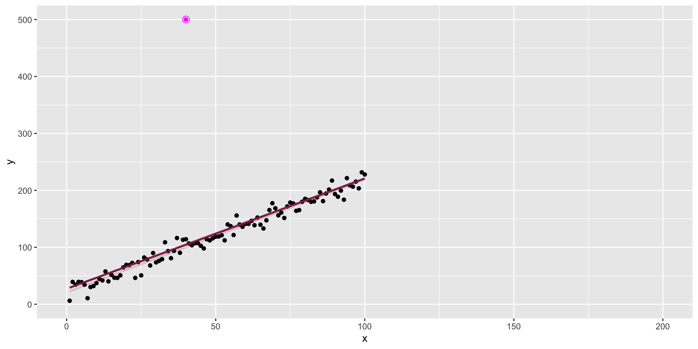
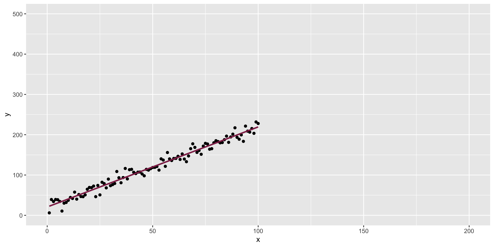
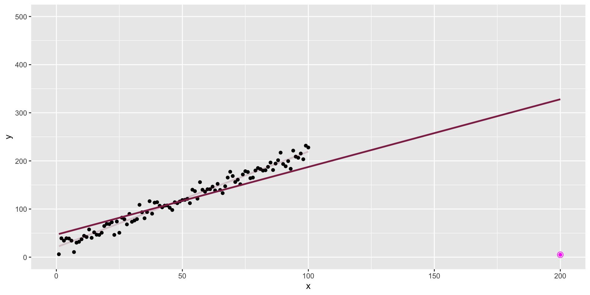

05:00
Lab 3 - Coffee ratings
STA 210 - Spring 2022
Welcome
Goals
- Meet your team!
- Ice breaker / get to know your team
- Team agreement
- Lab 3 - Coffee ratings
Meet your team!
Click here to find your team.
Sit with your team.
Icebreaker
Quick introductions: Name and hometown
Choose a reporter: The person whose birthday is closest to January 31
Identify 8 things everyone in the group has in common:
- Not clothes, e.g., we’re all wearing shoes!
- Not body parts, e.g., we all have a nose!
Team name + agreement
Come up with a team name. You can’t have the same name as another group in the class, so be creative!
- Your TA will get your team name by the end of lab.
Fill out the team agreement. The goals of the agreement are to…
- Gain a common understanding of the team’s goals and expectations for collaboration
- Make a plan for team communication
- Make a plan for working outside of lab
Team workflow
Only one team member should type at a time. There are markers in today’s lab to help you determine whose turn it is to type.
- Every team member should still be engaged in discussion for all questions, even if it’s not your turn type.
Don’t forget to pull to get your teammates’ updates before making changes to the
.qmdfile.Only one submission for the team on Gradescope.
Team workflow, in action
- Complete the “Workflow: Using Git and GitHub as a team” section of the lab in your teams.
- When done, pause and wait for your TA to walk you through the rest of the slides before continuing to the following section.
10:00
Tips for working in a team
- Do not pressure each other to finish early; use the time wisely to really learn the material and produce a quality report.
- The labs are structured to help you learn the steps of a data analysis. Do not split up the lab among the team members; work on it together in its entirety.
- Everyone has something to contribute! Use the lab groups as an opportunity to share ideas and learn from each other.
Model diagnostics
The data

The data + an outlier

The data + influential point

Influential point
An observation is influential if removing it substantially changes the coefficients of the regression model.


Influential points
Influential points have a large impact on the coefficients and standard errors used for inference
These points can sometimes be identified in a scatterplot if there is only one predictor variable, this is often not the case when there are multiple predictors
We will use measures to quantify an individual observation’s influence on the regression model: leverage, standardized residuals, and Cook’s distance
Remember augment()?
# A tibble: 32 × 9
.rownames mpg disp .fitted .resid .hat .sigma .cooksd .std.resid
<chr> <dbl> <dbl> <dbl> <dbl> <dbl> <dbl> <dbl> <dbl>
1 Mazda RX4 21 160 23.0 -2.01 0.0418 3.29 8.65e-3 -0.630
2 Mazda RX4 Wag 21 160 23.0 -2.01 0.0418 3.29 8.65e-3 -0.630
3 Datsun 710 22.8 108 25.1 -2.35 0.0629 3.28 1.87e-2 -0.746
4 Hornet 4 Drive 21.4 258 19.0 2.43 0.0328 3.27 9.83e-3 0.761
5 Hornet Sportabout 18.7 360 14.8 3.94 0.0663 3.22 5.58e-2 1.25
6 Valiant 18.1 225 20.3 -2.23 0.0313 3.28 7.82e-3 -0.696
7 Duster 360 14.3 360 14.8 -0.462 0.0663 3.31 7.70e-4 -0.147
8 Merc 240D 24.4 147. 23.6 0.846 0.0461 3.30 1.72e-3 0.267
9 Merc 230 22.8 141. 23.8 -0.997 0.0482 3.30 2.50e-3 -0.314
10 Merc 280 19.2 168. 22.7 -3.49 0.0396 3.24 2.48e-2 -1.10
# … with 22 more rowsModel diagnostics
Use the augment() function to output statistics that can be used to diagnose the model, along with the predicted values and residuals:
- outcome and predictor variables in the model
.fitted: predicted values.se.fit: standard errors of predicted values.resid: residuals.hat: leverage.sigma: estimate of residual standard deviation when the corresponding observation is dropped from model.cooksd: Cook’s distance.std.resid: standardized residuals